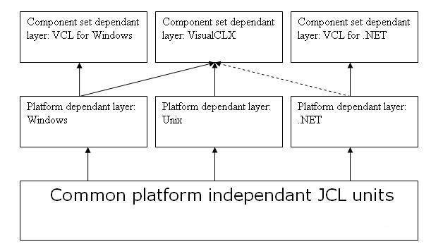

This paper presents the JCL teams strategy for cross platform compliance of the Jedi Code Library. It is based up on the discussions within the JCL newsgroup and JCL developer mailing lists. This document is currently work in progress and subject to changes with or without notice.
Version history:
0.1 Initial release
The main objective is to make the Jedi Code Library VisualCLX (Kylix for Delphi/Delphi) and Delphi.NET compatible. For a detailed explanation of the currently used terminology, see the following article Overview of the VCL for .NET.
We have to cope with nearly all aspects of cross platform progamming, like different APIs, different operating system concepts etc. Since we want to be as crossplatform compatible as possible interface compatability is the most important issue for us. Jedi Code Library users should have to opportunity the use the JCL on whatever platform they like. Figure 1 shows the three basic layers we have to deal with:

Fig 1: The Jedi Code Library crossplatform layer structure
The Jedi Code Library currently targets the following platforms:
As a mid or long term perspective we are hoping to get the JCL FreePascal compatible. This involves the possibilty to have the JCL running on DOS, OS/2, FreeBSD and AmigaOS.
This layer consists of all files which are not platform dependant or need only very minor adjustations. Furthermore all units in this layer do not depend on a specific component set. Examples for common platform independant units are JclBase, JclDateTime, JclFileUtils and JclMath. The units have been ported to all platforms and are the crossplatform "core" of the Jedi Code Library. As a general rule a unit in this layer should have no platform specific ifdefs in its interface section.
Furthermore we do not have to differentiate between VCL and VisualCLX units only (the so called component set dependent layer), but also between UNIX, Windows and .NET dependent units. The platform dependent units doesn't need to be interface compatible (if there is an equivalent in one of the other suported platforms at all!). An example for a platform dependant unit is JclCLI. Nonetheless if there are equivalents in all other supported platforms as well it might be considerable to write a more general class and include that unit into the common platform indepedant layer.
When it comes to sharing code between VCL and VisualCLX-applications, some facts need to be stated:
When a unit contains neither VCL- nor VisualCLX-specific code, there is no problem: It can be used by either type of application.
While it is basically possible to create VCL-dependent and VisualCLX-dependent variants of the same unit by means of conditional compilation - and use them in VCL- and VisualCLX-applications respectively -, this method fails at design time: One and the same unit cannot be installed twice in the IDE, not even as part of different packages. We would have to rename one of the variants, effectively creating a new unit. Therefor we will use a preprocessor to resolve the conditional compilation symbols related to VCL/VisualCLX-specific code and create VCL/VisualCLX units from a common codebase.
Component dependant units should be largely "interface compatible" - interface adjustments for specific component sets are unavoidable - nonetheless similar interfaces are desirable.
The preprocessor jpp is a modified version of Barry Kelly's ppp tool. In contrast to ppp, which resolves all conditional compilation directives without exception, with jpp symbols not only can be defined but also undefined. Those symbols which are neither defined nor explicitely undefined are considered as of unknown status and it and its related source code remains untouched.
The usage of jpp is not too hard. It is called via
jpp [options] <input files>...Possible options are
-i Process includes -c Process conditional directives -C Strip comments -pxxx Add xxx to include path -dxxx Define xxx as a preprocessor conditional symbol -uxxx Assume preprocessor conditional symbol xxx as not defined -x[n:]yyy Strip first n characters from file name; precede filename by prefix yyy
The example command line below generates a file JclQGraphics.pas in subdirectory CLX from file Graphics.cb located in the current directory. Symbols "VisualCLX" and "COMPILER6_UP" are specified as defined, "Bitmap32" and "VCL" as undefined.
jpp -c -dVisualCLX -dCOMPILER6_UP -uBitmap32 -uVCL -xCLX\JclQ Graphics.cb
First compile Preprocessor\jpp.exe from Preprocessor\jpp.dpr.
Then change to the "Source" directory and type "make" at the command line.
This will create the units
VCL\JclGraphics.pas
VCL\JclGraphUtils.pas
CLX\JclQGraphics.pas
CLX\JclQGraphUtils.pas
from their prototypes _Graphics.pas and _GraphUtils.pas.
To reduce VCL dependencies in JCL, the following changes have been made:
Replace "uses Consts," by
uses
{$IFDEF COMPILER6_UP}
RtlConsts, // VisualCLX-package compatible (part of rtlxx.bpl)
{$ELSE}
Consts, // not VisualCLX-package compatible (part of vclxx.bpl)
{$ENDIF COMPILER6_UP}
Note that the first two changes have enormous impact, since many JCL units use JclFileUtils and JclSysInfo (which both use JclShell). This leaves JclGraphics and JclGraphUtils as sole units with genuine VCL/VisualCLX-dependencies. JclPrint is the only remaining pure VCL-dependent units.
With the new JCL release we introduce a more appropriate source file directory structure. The files are now grouped according their respective layers.
Source/ Common DotNet Unix VCL VisCLX Windows
This table gives a short overview of which units are already working under three different Delphi language compilers/platforms. There are three status levels possible:
| Name | Delphi (Windows) | Kylix for Delphi | Delphi.NET |
| Jcl8087 | yes | yes |
no |
| JclAppInst | yes | no | no |
| JclCil | yes | no | no |
| JclClr | yes | no | no |
| JclCom | yes | no | no |
| JclComplex | yes | yes | no |
| JclConsole | yes | no | no |
| JclCounter | yes | yes | no |
| JclDateTime | yes | partly | no |
| JclDebug | yes | no | no |
| JclDotNet | yes | no | no |
| JclEDI | yes | yes | no |
| JclEDISEF | yes | yes | no |
| JclEDIXML | yes | yes | no |
| JclEDI_ANSIX12 | yes | yes | no |
| JclEDI_UNEDIFACT | yes | yes | no |
| JclFileUtils | yes | partly | no |
| JclExprEval | yes | yes |
no |
| JclHookExcept | yes | no | no |
| JclIniFiles | yes | yes |
no |
| JclLanMan | yes | no | no |
| JclLocales | yes | no | no |
| JclLogic | yes | yes | no |
| JclMapi | yes | no | no |
| JclMath | yes | yes | no |
| JclMetaData | yes | no | no |
| JclMidi | yes | no | no |
| JclMime | yes | yes | no |
| JclMiscel | yes | no | no |
| JclMultimedia | yes | no | no |
| JclNTFS | yes | no | no |
| JclPEImage | yes | no | no |
| JclPrint | yes | no | no |
| JclStrHashMap | yes | yes |
no |
| JclStatistics | yes | yes | no |
| JclShell | yes | no | no |
| JclSecurity | yes | no | no |
| JclSchedule | yes | yes | no |
| JclRTTI | yes | no | no |
| JclResources | yes | no | no |
| JclRegistry | yes | no | no |
| JclStrings | yes | yes | no |
| Jclsvcctrl | yes | no | no |
| Jclsynch | yes | no | no |
| JclTask | platform | no | no |
| JclSysUtils | yes | partly |
no |
| JclSysInfo | yes | partly | no |
| JclTD32 | yes | no | no |
| JclUnicode | yes | no | no |
| JclUnitConv | yes | yes | no |
| JclWin32 | dependant |
no | no |
| JclWinMidi | dependant |
no | no |
For crossplatform compatability it is absolutely necessary to reduce the amount of inline assembler code used. Therefore as a general rule every line of assembler must have a pure pascal pendant. Please use assembler only if it really has a noticeable impact on the libraries performance.
{$IFNDEF PUREPASCAL}
// assembler code here
{$ELSE}
// Delphi equivalent here
{$ENDIF}